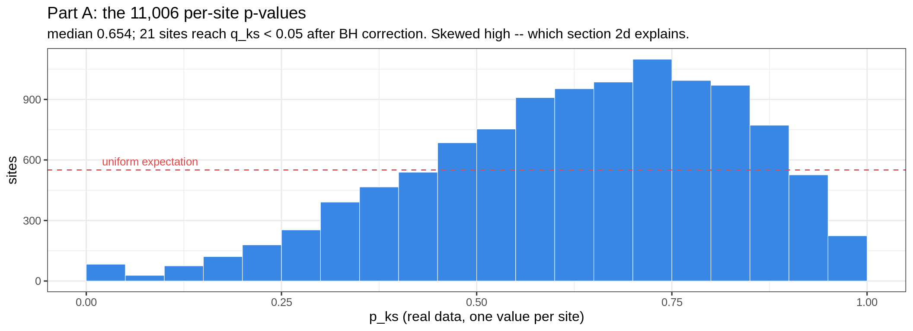
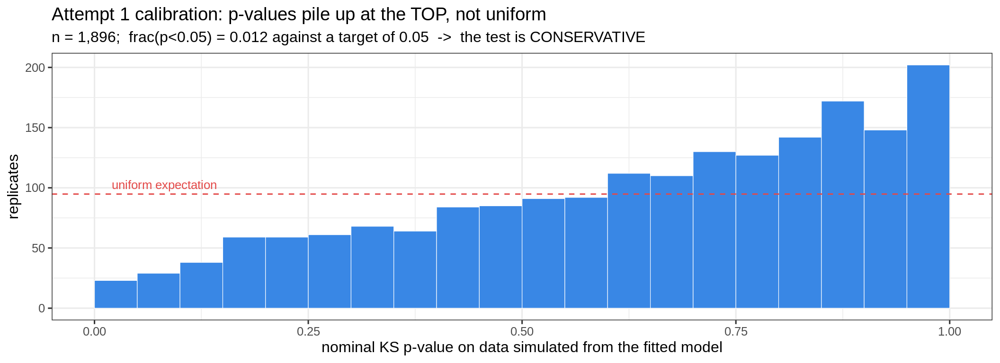
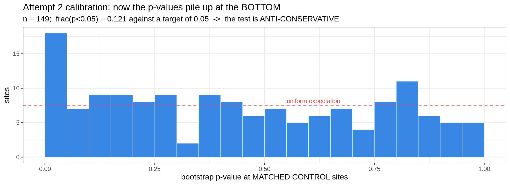
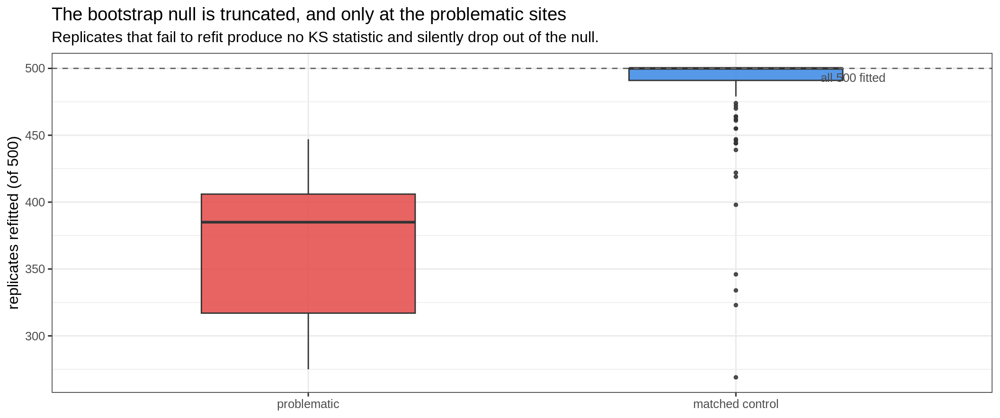

Last updated: 2026-08-25
Checks: 6 1
Knit directory: pumseq/
This reproducible R Markdown analysis was created with workflowr (version 1.7.0). The Checks tab describes the reproducibility checks that were applied when the results were created. The Past versions tab lists the development history.
The R Markdown file has unstaged changes. To know which version of
the R Markdown file created these results, you’ll want to first commit
it to the Git repo. If you’re still working on the analysis, you can
ignore this warning. When you’re finished, you can run
wflow_publish to commit the R Markdown file and build the
HTML.
Great job! The global environment was empty. Objects defined in the global environment can affect the analysis in your R Markdown file in unknown ways. For reproduciblity it’s best to always run the code in an empty environment.
The command set.seed(20260202) was run prior to running
the code in the R Markdown file. Setting a seed ensures that any results
that rely on randomness, e.g. subsampling or permutations, are
reproducible.
Great job! Recording the operating system, R version, and package versions is critical for reproducibility.
Nice! There were no cached chunks for this analysis, so you can be confident that you successfully produced the results during this run.
Great job! Using relative paths to the files within your workflowr project makes it easier to run your code on other machines.
Great! You are using Git for version control. Tracking code development and connecting the code version to the results is critical for reproducibility.
The results in this page were generated with repository version 1cb1d5d. See the Past versions tab to see a history of the changes made to the R Markdown and HTML files.
Note that you need to be careful to ensure that all relevant files for
the analysis have been committed to Git prior to generating the results
(you can use wflow_publish or
wflow_git_commit). workflowr only checks the R Markdown
file, but you know if there are other scripts or data files that it
depends on. Below is the status of the Git repository when the results
were generated:
Ignored files:
Ignored: analysis/qtl_mapping_summary_cache/
Unstaged changes:
Modified: analysis/qtl_mapping_betabinomial_diagnostic.Rmd
Modified: analysis/qtl_mapping_betabinomial_gof_failed.Rmd
Modified: analysis/qtl_mapping_score_vs_lrt.Rmd
Note that any generated files, e.g. HTML, png, CSS, etc., are not included in this status report because it is ok for generated content to have uncommitted changes.
These are the previous versions of the repository in which changes were
made to the R Markdown
(analysis/qtl_mapping_betabinomial_gof_failed.Rmd) and HTML
(docs/qtl_mapping_betabinomial_gof_failed.html) files. If
you’ve configured a remote Git repository (see
?wflow_git_remote), click on the hyperlinks in the table
below to view the files as they were in that past version.
| File | Version | Author | Date | Message |
|---|---|---|---|---|
| Rmd | 1cb1d5d | XSun | 2026-08-25 | update |
| html | 1cb1d5d | XSun | 2026-08-25 | update |
| Rmd | 98956cc | XSun | 2026-08-25 | update |
| Rmd | 2bdf308 | XSun | 2026-08-25 | update |
| html | 2bdf308 | XSun | 2026-08-25 | update |
suppressMessages({ library(data.table); library(ggplot2) })
knitr::opts_chunk$set(echo = TRUE, warning = FALSE, message = FALSE,
fig.align = "center", fig.width = 11)
PSI <- "/project/xinhe/xsun/pumseq/pumseq_processed/psi_qtl"
G <- file.path(PSI, "qtl_betabinomial/goodness_of_fit")
gof <- fread(file.path(G, "site_goodness_of_fit_noUCcalled.txt.gz"))
bp1 <- fread(file.path(G, "calibration_bootstrap_p_noUCcalled.txt.gz"))$bootstrap_p_ks
bs <- fread(file.path(G, "gof_bootstrap_sites.txt.gz"))
feat <- fread(file.path(G, "site_features_noUCcalled.txt.gz"))
crit <- fread(file.path(G, "filter_criteria_comparison.txt"))
gof[, class := factor(class, levels = c("still problematic after filtering", "rest"))]
bs[, grp := factor(grp, levels = c("problematic", "matched control"))]
ctrl <- bs[grp == "matched control"]We test if Beta-Binomial is a good fit. If the data form discrete clusters of %pU levels, then Beta-Binomial may be a poor fit.
Two attempts were made and neither produced usable p-values.
knitr::kable(data.table(
test = c("Tarone (1979) Z", "Brooks et al. (1997)", "both of the above"),
problem = c(
"tests binomial vs beta-binomial, i.e. whether overdispersion exists at all -- the wrong direction. It would confirm the beta-binomial beats the binomial, which we already assume.",
"is a genuine beta-binomial GOF test, but Garren, Smith & Piegorsch (Biometrics 2000; 56:947-950) showed it cannot distinguish the beta-binomial from 'some severely non-beta-binomial models' -- exactly our alternative.",
"assume homogeneous data: one mu shared by all observations. Our model has covariates (intercept + 3 M-value PCs), so mu differs per cell line.")),
caption = "Why the classical tests were not used")| test | problem |
|---|---|
| Tarone (1979) Z | tests binomial vs beta-binomial, i.e. whether overdispersion exists at all – the wrong direction. It would confirm the beta-binomial beats the binomial, which we already assume. |
| Brooks et al. (1997) | is a genuine beta-binomial GOF test, but Garren, Smith & Piegorsch (Biometrics 2000; 56:947-950) showed it cannot distinguish the beta-binomial from ‘some severely non-beta-binomial models’ – exactly our alternative. |
| both of the above | assume homogeneous data: one mu shared by all observations. Our model has covariates (intercept + 3 M-value PCs), so mu differs per cell line. |
So the test had to be built from a general principle instead:
randomized quantile residuals (Dunn & Smyth 1996).
Ask the fitted model what percentile each cell line’s observation sits
at; under a correctly specified model those percentiles are uniform, so
testing uniformity is the fit test. (The percentiles are the
PIT values u; the residual proper is qnorm(u)
– see the note in section 2.) Randomization inside each integer’s
probability interval is what makes the percentiles continuous — without
it a discrete CDF gives lumpy values that are not uniform even under a
true model.
Four quantities were computed per site:
knitr::kable(data.table(
output = c("p_ks", "p_sw", "p_dip", "best_K"),
question = c("does the model fit? (KS of percentiles vs uniform -- PRIMARY)",
"same, shape-sensitive (Shapiro-Wilk on qnorm(u) -- secondary)",
"is there more than one cluster? (Hartigan dip test, ignores the model)",
"how many clusters? (beta-binomial mixture BIC over K = 1, 2, 3)"),
note = c("chosen as primary because its null is fully specified -- nothing can absorb a misfit",
"location- and scale-invariant, so BLIND to residuals that are normal but too wide, i.e. to dispersion misfit",
"answers 'more than one', not 'how many'",
"the interpretable number: K=3 is the 0/1/2 genotype signature")),
caption = "The four per-site outputs")| output | question | note |
|---|---|---|
| p_ks | does the model fit? (KS of percentiles vs uniform – PRIMARY) | chosen as primary because its null is fully specified – nothing can absorb a misfit |
| p_sw | same, shape-sensitive (Shapiro-Wilk on qnorm(u) – secondary) | location- and scale-invariant, so BLIND to residuals that are normal but too wide, i.e. to dispersion misfit |
| p_dip | is there more than one cluster? (Hartigan dip test, ignores the model) | answers ‘more than one’, not ‘how many’ |
| best_K | how many clusters? (beta-binomial mixture BIC over K = 1, 2, 3) | the interpretable number: K=3 is the 0/1/2 genotype signature |
Attempt 1 is one script doing two separate jobs: Part A produces the actual per-site result from the real data, and Part B audits whether those results can be trusted. Part A involves no simulation at all.
For one site, with 50 cell lines each having a converted count
y out of a total n:
logit(mu_i) = intercept + PC1 + PC2 + PC3, one shared phi.
No SNP: the null is what the LRT’s inflation traced to, and including a
SNP would mean choosing one of the site’s 10-900 cis-SNPs, the best of
which would absorb the misfit we are looking for. So each cell line gets
its own mu_i (4 parameters generate all 50) and the site
gets one phi.BetaBinomial(n = 180, mu = 0.07, phi)
for a cell line with 180 reads.y = 12, F(11) = 0.399 and
F(12) = 0.509, so y = 12 occupies the
percentile interval [0.399, 0.509] – the slice of probability
the value 12 accounts for.u = 0.428. This randomisation is what makes the percentiles
continuous; without it every observation of 12 returns exactly 0.509 and
the percentiles could not be uniform even under a perfect model.Run over fold5_union_noUCcalled: 11,006 of 11,298 sites
testable (the other 292 have fewer than 10 covered cell lines or the fit
failed). That is 55,030 KS tests producing 11,006
p-values.
d0 <- gof[!is.na(p_ks)]
ggplot(d0, aes(p_ks)) +
geom_histogram(breaks = seq(0, 1, 0.05), fill = "#3987e5", colour = "white",
linewidth = 0.2) +
geom_hline(yintercept = nrow(d0) / 20, linetype = "dashed", colour = "#e34948") +
annotate("text", x = 0.02, y = nrow(d0) / 20, hjust = 0, vjust = -0.6,
label = "uniform expectation", colour = "#e34948", size = 3.4) +
labs(x = "p_ks (real data, one value per site)", y = "sites",
title = sprintf("Part A: the %s per-site p-values", format(nrow(d0), big.mark = ",")),
subtitle = sprintf("median %.3f; %d sites reach q_ks < 0.05 after BH correction. Skewed high -- which section 2d explains.",
median(d0$p_ks), sum(d0$q_ks < 0.05, na.rm = TRUE))) +
theme_bw(base_size = 12)
| Version | Author | Date |
|---|---|---|
| 1cb1d5d | XSun | 2026-08-25 |
knitr::kable(data.table(
quantity = c("sites in the phenotype", "testable (>=10 covered cell lines, fit converged)",
"p_ks values produced", "KS tests run (5 jitter draws each)",
"sites with q_ks < 0.05 (BH)", "sites with q_dip < 0.05 (BH)",
"sites preferring K >= 2 components"),
n = c("11,298", format(nrow(gof), big.mark = ","), format(nrow(gof), big.mark = ","),
format(nrow(gof) * 5, big.mark = ","),
sum(gof$q_ks < 0.05, na.rm = TRUE), sum(gof$q_dip < 0.05, na.rm = TRUE),
sum(gof$best_K >= 2, na.rm = TRUE))),
caption = "Part A output. The 21 is a FLOOR, not a rate -- see 2d.")| quantity | n |
|---|---|
| sites in the phenotype | 11,298 |
| testable (>=10 covered cell lines, fit converged) | 11,006 |
| p_ks values produced | 11,006 |
| KS tests run (5 jitter draws each) | 55,030 |
| sites with q_ks < 0.05 (BH) | 21 |
| sites with q_dip < 0.05 (BH) | 595 |
| sites preferring K >= 2 components | 330 |
knitr::kable(gof[, .(sites = .N,
`median p_ks` = signif(median(p_ks, na.rm = TRUE), 3),
`frac q_ks<0.05` = sprintf("%.1f%%", 100 * mean(q_ks < 0.05, na.rm = TRUE)),
`frac q_sw<0.05` = sprintf("%.1f%%", 100 * mean(q_sw < 0.05, na.rm = TRUE)),
`frac q_dip<0.05` = sprintf("%.1f%%", 100 * mean(q_dip < 0.05, na.rm = TRUE))),
by = class], caption = "Part A by site class -- read as lower bounds, not rates")| class | sites | median p_ks | frac q_ks<0.05 | frac q_sw<0.05 | frac q_dip<0.05 |
|---|---|---|---|---|---|
| rest | 10989 | 0.654 | 0.2% | 1.0% | 5.4% |
| still problematic after filtering | 17 | 0.407 | 5.9% | 11.8% | 17.6% |
Part A step 5 claims that a correct model gives uniform percentiles.
But mu and phi were estimated from the same 50
observations, which may break that. Part A cannot tell you – you need
data where the model is true by construction:
f <- fit_bb_mle(y, n, X) # 1. fit the REAL data
ysim <- rbetabinom.ab(n, shape1 = a, shape2 = b) # 2. simulate from its parameters
f2 <- fit_bb_mle(ysim, n, X) # 3. RE-FIT the simulated data
u <- rqr_u(ysim, n, f2$mu0, f2$phi) # 4. PERCENTILES under the re-fit
ks.test(u, "punif")$p.value # 5. are they uniform?400 sites x 5 replicates = ~1,896 p-values, which must be uniform.
A note on naming, since it is a common trip-up. u holds
the percentiles (the probability-integral-transform
values), which are Uniform(0,1) under a correct model. The
residual proper is z = qnorm(u), which is N(0,1)
under a correct model — that is what Dunn & Smyth call the
randomized quantile residual, and it is what Shapiro-Wilk is given. The
two carry the same information in different coordinates:
| object | scale | null distribution | test used |
|---|---|---|---|
u |
(0, 1) | Uniform(0, 1) | KS (primary) |
z = qnorm(u) |
(-Inf, Inf) | N(0, 1) | Shapiro-Wilk (secondary) |
Note that the re-fit is already present at this stage — that matters for reading attempt 2 below.
d1 <- data.table(p = bp1)
ggplot(d1, aes(p)) +
geom_histogram(breaks = seq(0, 1, 0.05), fill = "#3987e5", colour = "white",
linewidth = 0.2) +
geom_hline(yintercept = length(bp1) / 20, linetype = "dashed", colour = "#e34948") +
annotate("text", x = 0.02, y = length(bp1) / 20, hjust = 0, vjust = -0.6,
label = "uniform expectation", colour = "#e34948", size = 3.4) +
labs(x = "nominal KS p-value on data simulated from the fitted model",
y = "replicates",
title = "Attempt 1 calibration: p-values pile up at the TOP, not uniform",
subtitle = sprintf("n = %s; frac(p<0.05) = %.3f against a target of 0.05 -> the test is CONSERVATIVE",
format(length(bp1), big.mark = ","), mean(bp1 < 0.05))) +
theme_bw(base_size = 12)
| Version | Author | Date |
|---|---|---|
| 2bdf308 | XSun | 2026-08-25 |
frac(p<0.05) = 0.012 where 0.05 is required, and a KS
test of these against uniform gives p = 0.
Cause. Randomized quantile residuals are exactly uniform when the parameters are known. Ours are estimated from the same ~50 observations (4 coefficients plus φ), so the fitted model sits closer to the data than the truth would and the residuals are under-dispersed. The failure is therefore in the reference distribution: the asymptotic KS null does not apply to residuals built from estimated parameters at this sample size. Dunn & Smyth’s “exactly normal” carries the caveat “apart from sampling variability in the estimated parameters” — at n = 50 with 5 parameters that caveat dominates.
Consequence for section 2b. Every number in Part A’s result is now a floor. A conservative test still has one use — anything it does flag is real, so the 21 sites at q_ks < 0.05 are genuine misfits and the enrichment in the problematic class is real in direction. But the rates cannot be quantified, and a site passing the test cannot be called well-fitted. That is what makes attempt 1 unusable as a per-site verdict, and it is what attempt 2 tried to repair.
The simulate-and-refit machinery was already in place; what was wrong was the reference distribution. So attempt 2 changes only that — the null is generated rather than looked up:
D_obs —
the KS statistic, not its p-value. The theoretical
p-value is discarded entirely.D_sim. D is
averaged over 3 jitter draws each time.D_obs is among those
500:\[p_{\text{boot}} = \frac{1 + \#\{D_{\text{sim}} \ge D_{\text{obs}}\}}{B + 1}\]
The 1 + counts the observed statistic as one of its own
null draws, so the smallest reportable p-value is 1/501 rather than 0.
This is self-calibrating by construction: anything that biases
D – estimating 5 parameters from 50 points, coarse
discreteness – biases D_obs and every D_sim
alike and cancels.
To be explicit about the difference, because it is easy to misread: both attempts fit the real data, simulate from it, and re-fit. Attempt 1 used those simulations only to audit a nominal p-value; attempt 2 uses them to build the p-value.
Scope: 500 refits per site is ~500x the per-site
cost of attempt 1, so this ran on 172 sites, not 11,006 — the 17
still-problematic ones plus 10 matched controls each, matched on covered
cell lines, total depth and pooled %pU. (Total runtime was therefore
lower than attempt 1: 74 s against 12 min 20 s.) The controls
are the calibration check — being ordinary sites, their
p_boot must be uniform.
ggplot(ctrl, aes(p_boot)) +
geom_histogram(breaks = seq(0, 1, 0.05), fill = "#3987e5", colour = "white",
linewidth = 0.2) +
geom_hline(yintercept = nrow(ctrl) / 20, linetype = "dashed", colour = "#e34948") +
annotate("text", x = 0.55, y = nrow(ctrl) / 20, hjust = 0, vjust = -0.6,
label = "uniform expectation", colour = "#e34948", size = 3.4) +
labs(x = "bootstrap p-value at MATCHED CONTROL sites", y = "sites",
title = "Attempt 2 calibration: now the p-values pile up at the BOTTOM",
subtitle = sprintf("n = %d; frac(p<0.05) = %.3f against a target of 0.05 -> the test is ANTI-CONSERVATIVE",
nrow(ctrl), mean(ctrl$p_boot < 0.05))) +
theme_bw(base_size = 12)
| Version | Author | Date |
|---|---|---|
| 2bdf308 | XSun | 2026-08-25 |
knitr::kable(data.table(
quantile = c("5%", "10%", "25%", "50%", "75%", "90%", "95%"),
observed = round(quantile(ctrl$p_boot, c(.05, .1, .25, .5, .75, .9, .95)), 3),
`expected if uniform` = c(0.05, 0.10, 0.25, 0.50, 0.75, 0.90, 0.95)),
row.names = FALSE,
caption = "Control p_boot against the uniform it should follow -- skewed across the whole range, not just the tail")| quantile | observed | expected if uniform |
|---|---|---|
| 5% | 0.024 | 0.05 |
| 10% | 0.047 | 0.10 |
| 25% | 0.180 | 0.25 |
| 50% | 0.419 | 0.50 |
| 75% | 0.720 | 0.75 |
| 90% | 0.858 | 0.90 |
| 95% | 0.925 | 0.95 |
So attempt 1 was conservative at 0.012 and attempt 2 is anti-conservative at 0.121. Neither is usable.
Attempt 2 failing is the more surprising of the two: an empirical p-value built from a site’s own null should be calibrated whatever the estimation effect. The reason it is not turns out to be a defect in how failures were handled, not in the bootstrap principle.
ggplot(bs, aes(grp, n_sim_ok, fill = grp)) +
geom_boxplot(width = 0.5, alpha = 0.85, outlier.size = 1) +
geom_hline(yintercept = 500, linetype = "dashed", colour = "grey40") +
annotate("text", x = 2.35, y = 500, hjust = 1, vjust = 1.6, size = 3.4,
colour = "grey30", label = "all 500 fitted") +
scale_fill_manual(values = c(problematic = "#e34948",
`matched control` = "#3987e5"), guide = "none") +
labs(x = NULL, y = "replicates refitted (of 500)",
title = "The bootstrap null is truncated, and only at the problematic sites",
subtitle = "Replicates that fail to refit produce no KS statistic and silently drop out of the null.") +
theme_bw(base_size = 12)
| Version | Author | Date |
|---|---|---|
| 2bdf308 | XSun | 2026-08-25 |
knitr::kable(bs[, .(sites = .N,
`median refits ok (of 500)` = as.numeric(median(n_sim_ok)),
`min` = min(n_sim_ok),
`sites below 450/500` = sum(n_sim_ok < 450)), by = grp],
caption = "Every problematic site loses a fifth to nearly half of its null replicates; controls lose almost none.")| grp | sites | median refits ok (of 500) | min | sites below 450/500 |
|---|---|---|---|---|
| matched control | 149 | 500 | 269 | 12 |
| problematic | 9 | 385 | 275 | 9 |
If the replicates that fail are the ones that would have produced large KS statistics, the null is cut off at the top and the observed statistic looks falsely extreme. That is the mechanism, and it also explains a second problem:
8 of the 17 problematic sites produced no result at all, because more than half their replicates failed, tripping the script’s own guard. The comparison therefore ran on 9 of 17, and the 8 excluded are plausibly the worst ones — so any enrichment estimate from the survivors is biased by an unknown amount.
knitr::kable(bs[grp == "problematic"][order(p_boot), .(
site = sid, ig_mhc, n_cl, pooled = round(pooled, 3),
D_obs = round(D_obs, 3), p_boot = signif(p_boot, 3),
q_boot = signif(q_boot, 3), p_nominal = signif(p_ks_nominal, 2), best_K)],
caption = paste("The", nrow(bs[grp == "problematic"]), "problematic sites that completed.",
"After BH correction nothing reaches q < 0.05."))| site | ig_mhc | n_cl | pooled | D_obs | p_boot | q_boot | p_nominal | best_K |
|---|---|---|---|---|---|---|---|---|
| 3 37277733 | FALSE | 50 | 0.534 | 0.271 | 0.00223 | 0.078 | 8.8e-04 | 2 |
| 14 22551976 | FALSE | 50 | 0.416 | 0.308 | 0.00246 | 0.078 | 3.3e-05 | 3 |
| 6 29943223 | TRUE | 44 | 0.579 | 0.228 | 0.00247 | 0.078 | 9.8e-03 | 2 |
| 14 106627394 | TRUE | 35 | 0.275 | 0.174 | 0.01550 | 0.246 | 2.0e-01 | 1 |
| 14 106639262 | TRUE | 41 | 0.069 | 0.159 | 0.05030 | 0.346 | 3.7e-01 | 1 |
| 2 89245076 | TRUE | 38 | 0.049 | 0.151 | 0.11600 | 0.568 | 5.0e-01 | 1 |
| 14 106410705 | TRUE | 39 | 0.376 | 0.143 | 0.27200 | 0.693 | 4.1e-01 | 1 |
| 14 106714819 | TRUE | 46 | 0.031 | 0.117 | 0.50700 | 0.839 | 3.0e-01 | 1 |
| 14 106537954 | TRUE | 37 | 0.020 | 0.113 | 0.82600 | 0.942 | 7.3e-01 | 1 |
Related: the current strategy and its calibration · the 26 problematic sites
sessionInfo()R version 4.2.0 (2022-04-22)
Platform: x86_64-pc-linux-gnu (64-bit)
Running under: CentOS Linux 8
Matrix products: default
BLAS/LAPACK: /software/openblas-0.3.13-el8-x86_64/lib/libopenblas_skylakexp-r0.3.13.so
locale:
[1] C
attached base packages:
[1] stats graphics grDevices utils datasets methods base
other attached packages:
[1] ggplot2_3.4.2 data.table_1.14.4 workflowr_1.7.0
loaded via a namespace (and not attached):
[1] tidyselect_1.2.0 xfun_0.38 bslib_0.3.1 colorspace_2.0-3
[5] vctrs_0.6.1 generics_0.1.3 htmltools_0.5.7 yaml_2.3.5
[9] utf8_1.2.2 rlang_1.1.2 R.oo_1.24.0 jquerylib_0.1.4
[13] later_1.3.0 pillar_1.9.0 glue_1.6.2 withr_2.5.0
[17] R.utils_2.11.0 lifecycle_1.0.4 stringr_1.5.0 munsell_0.5.0
[21] gtable_0.3.0 R.methodsS3_1.8.1 evaluate_0.15 labeling_0.4.2
[25] knitr_1.42 callr_3.7.0 fastmap_1.1.0 httpuv_1.6.5
[29] ps_1.7.0 fansi_1.0.3 highr_0.9 Rcpp_1.0.11
[33] promises_1.2.0.1 scales_1.2.0 jsonlite_1.8.7 farver_2.1.0
[37] fs_1.5.2 digest_0.6.29 stringi_1.7.6 processx_3.5.3
[41] dplyr_1.1.2 getPass_0.2-2 rprojroot_2.0.3 grid_4.2.0
[45] cli_3.6.2 tools_4.2.0 magrittr_2.0.3 sass_0.4.1
[49] tibble_3.2.1 whisker_0.4 pkgconfig_2.0.3 rmarkdown_2.21
[53] httr_1.4.5 rstudioapi_0.14 R6_2.5.1 git2r_0.30.1
[57] compiler_4.2.0